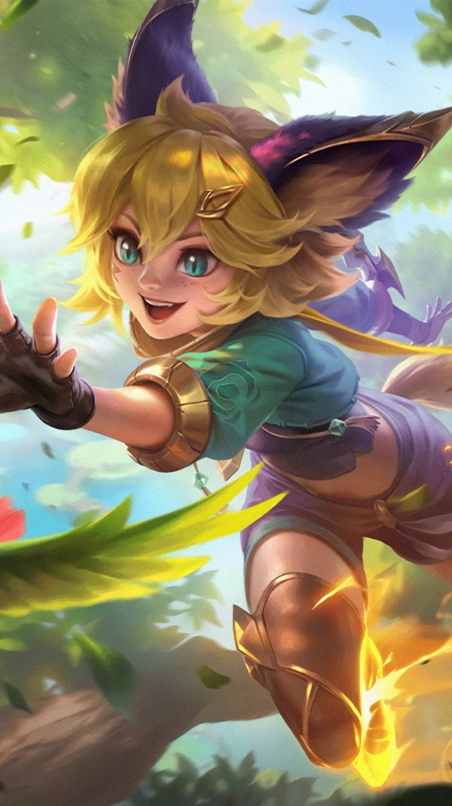

Kategori Game

Kategori 1
Deskripsi singkat mengenai kategori 1, termasuk informasi penting dan menarik yang bisa membuat pengguna tertarik untuk menjelajah lebih jauh.

Kategori 2
Deskripsi singkat mengenai kategori 2, termasuk informasi penting dan menarik yang bisa membuat pengguna tertarik untuk menjelajah lebih jauh.
Kategori 3
Deskripsi singkat mengenai kategori 3, termasuk informasi penting dan menarik yang bisa membuat pengguna tertarik untuk menjelajah lebih jauh.